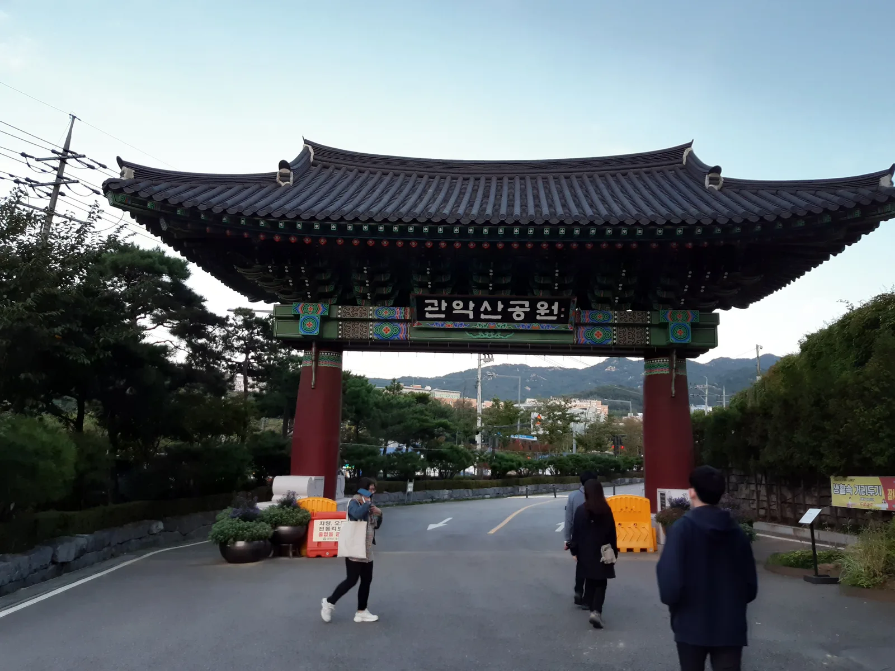
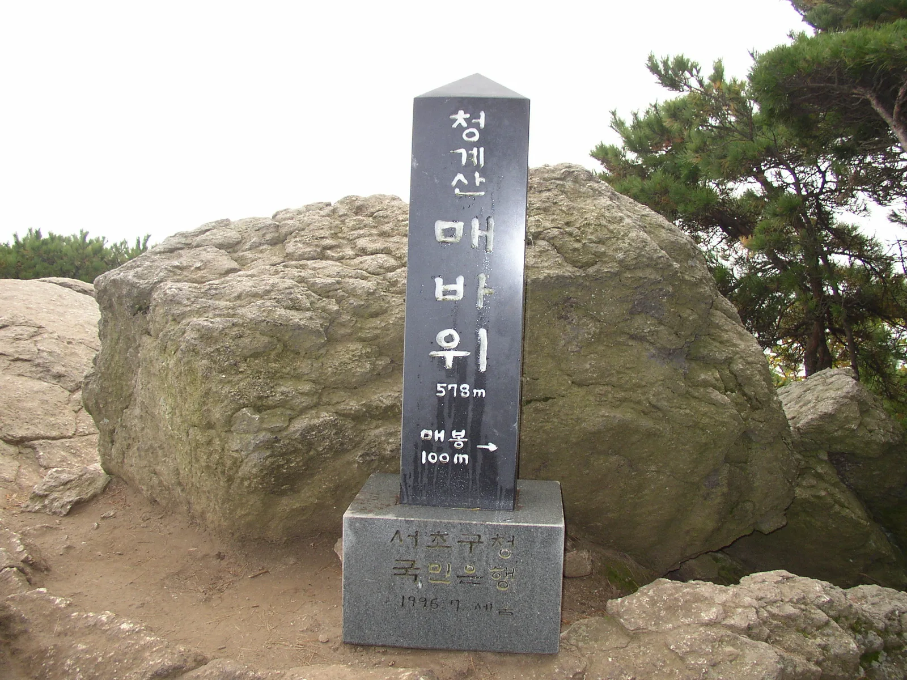
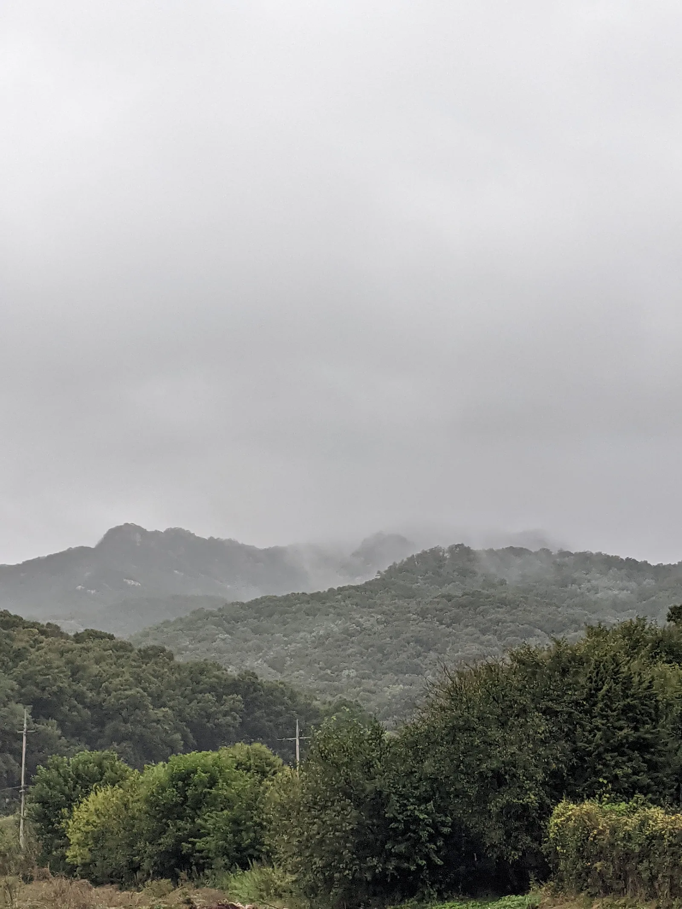
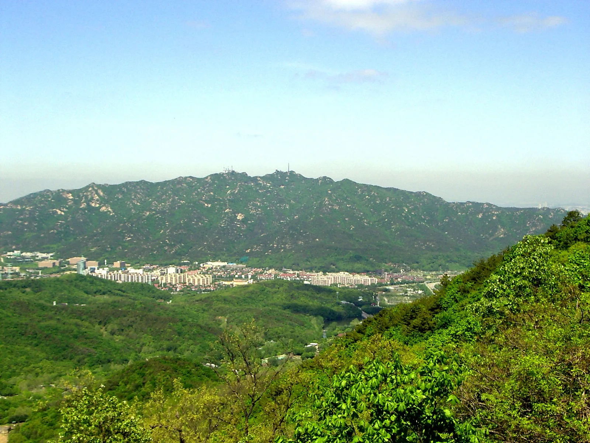

▲ 관악산공원 정문. 이 안쪽으로 이어지는 사당코스는 관리 주체가 직접 대중교통 이용을 권장한다 ⓒ Wikimedia Commons (CC BY-SA 4.0)
청계산과 관악산은 둘 다 서울 시민이 즐겨 찾는 근교산이지만, 자차로 접근하는 방식은 정반대에 가깝다. 청계산은 지하철 출구가 곧 등산로 입구로 이어지는 드문 사례이고, 관악산 사당코스는 관리 주체가 홈페이지에 직접 "주차가 어려우니 지하철 이용을 추천한다"고 안내한다.
1. 청계산 — 지하철 출구가 등산로 입구

▲ 청계산 매바위(578m) 표지석. 원터골 코스로 오르면 만나는 지점 중 하나다 ⓒ Wikimedia Commons (Public Domain)
청계산은 서초구 기준 청계골, 원터골, 개나리골, 화물터미널 네 곳의 입구가 있다. 이 중 원터골 입구가 가장 많이 이용되는데, 원터골 약수터를 지나 깔딱고개를 넘어 매봉까지 약 3km, 1시간 20분 코스다.
가장 큰 장점은 신분당선 청계산입구역 2번 출구로 나오면 바로 등산로 입구가 보인다는 점이다. 자차로 간다면 원터골 주차장(2,000원)이나 인근 주차장(시간당 1,000~1,500원)을 이용할 수 있고, 버스로는 양재역 10번 출구 환승주차장에서 4432번을 타고 원하는 입구에서 내리면 된다.
2. 관악산 — 사당코스는 지하철이 먼저다

▲ 안개 낀 관악산 능선. 사당코스는 관음사·마당바위·관악문을 거쳐 연주대까지 편도 3시간이 걸린다 ⓒ Wikimedia Commons (CC BY-SA 4.0)
관악산 사당코스는 사당역 4번 출구에서 시작해 관음사, 마당바위, 관악문을 거쳐 연주대까지 이어지는 편도 3시간 코스다. 그런데 이 코스에 대한 공식 안내에는 이례적인 문구가 붙어 있다. "주차가 어려우니 지하철 이용을 추천한다"는 것이다. 사당역 일대는 주택가와 상업지구가 밀집해 있어 등산객을 위한 별도 주차 공간이 충분하지 않기 때문이다.
반면 관악산공원 방향(낙성대 인근)은 상황이 다르다. 관악산공원 주차장은 5분당 150원(시간당 1,800원 수준)으로 운영되며, 08시부터 20시까지만 유료이고 야간에는 무료로 개방된다.
3. 코스 선택이 곧 접근 방식 선택
| 구분 | 청계산(원터골) | 관악산(사당코스) | 관악산공원(낙성대) |
|---|---|---|---|
| 추천 수단 | 자차·대중교통 모두 무난 | 대중교통 권장 | 자차 가능 |
| 주차요금 | 2,000원(원터골) | - | 5분당 150원 |
| 지하철 연계 | 청계산입구역 2번 출구 직결 | 사당역 4번 출구 | 낙성대역 인근 |
결국 어느 산을 가느냐보다 어느 코스로 가느냐가 자차 이용 여부를 결정한다. 관악산이라도 사당코스가 아니라 관악산공원(낙성대) 방향을 택하면 자차 진입이 한결 수월하다.
4. 정리

▲ 관악산에서 내려다본 서울 전경. 도심에 가까운 만큼 대중교통 연계가 잘 돼 있는 구간도 많다 ⓒ Wikimedia Commons (CC BY-SA 3.0)
체크포인트
- 청계산은 청계산입구역 2번 출구가 등산로 입구다. 자차·대중교통 모두 무난하다.
- 관악산 사당코스는 공식적으로 대중교통이 권장된다. 주차를 기대하고 가면 곤란해질 수 있다.
- 관악산을 자차로 가려면 관악산공원(낙성대) 방향이 현실적인 선택이다.
- 관악산공원 주차는 야간(20시 이후) 무료다.